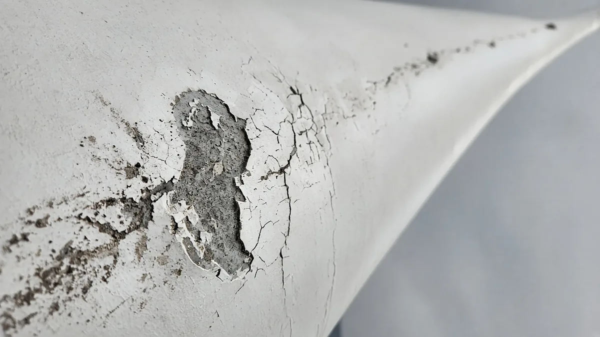
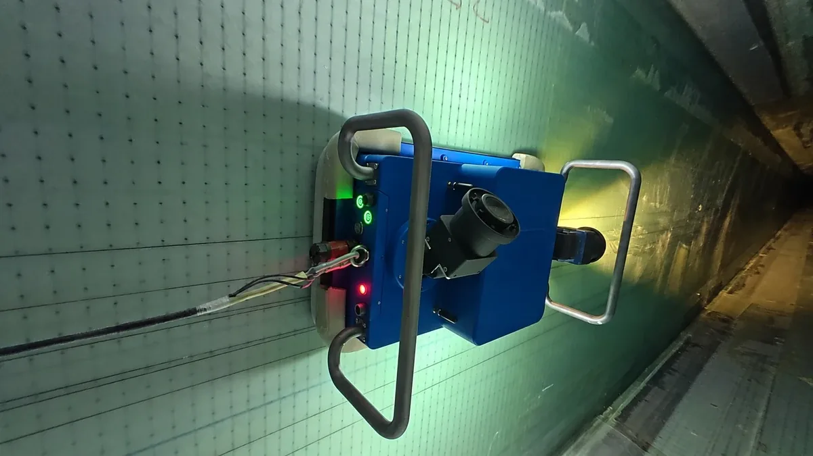
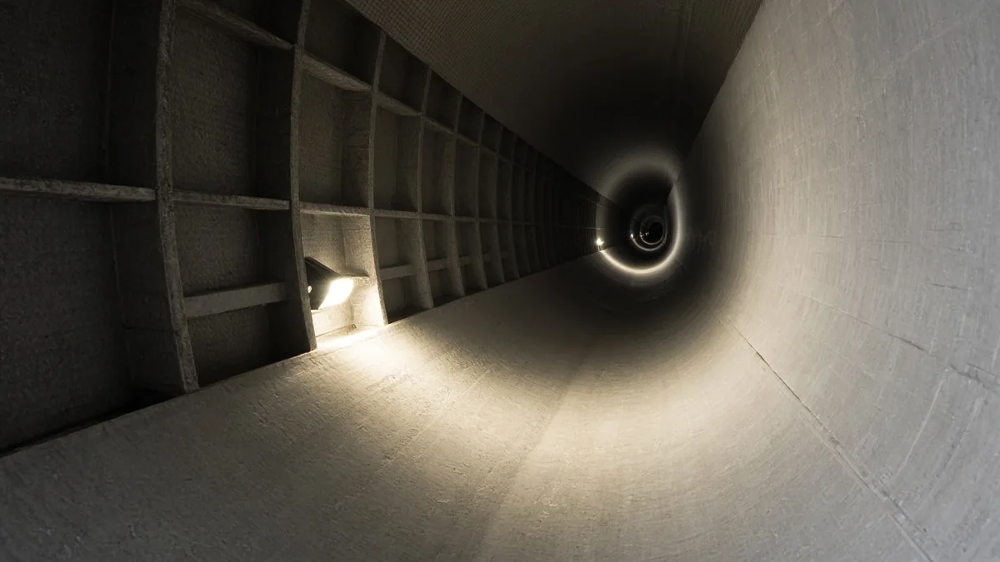

Drone vs Internal Robot: Choosing a Wind Turbine Blade Inspection Method
Blade inspection used to mean rope access teams. Today two technologies dominate the conversation: drones photographing the outside of blades, and crawler robots inspecting the inside. They are often presented as rivals, but they look at different parts of the same structure.
What each method actually sees
A drone flies around a stopped turbine and photographs the external surfaces: leading edge, trailing edge, pressure and suction sides, tip and lightning receptors. An internal robot enters through the blade root and records the interior: shell inner surfaces, spar caps, shear webs and bond lines.

Typical findings by method
| Finding | Drone (external) | Internal robot |
|---|---|---|
| Leading-edge erosion | Yes | No |
| Lightning damage at receptors | Yes | Sometimes, if it penetrates |
| Trailing-edge splits | Yes, once visible | Yes, from inside |
| Shear web or bond-line cracks | No | Yes |
| Laminate wrinkles, whitening | Rarely | Yes |
Access, safety and downtime
Drone inspections
Drones need the turbine stopped and the rotor positioned, then flight time per turbine is relatively short. Weather limits flights: strong wind, rain and poor light reduce image quality or ground the drone. Regulations on unmanned aircraft also apply.
Internal robot inspections
Internal inspection requires hub access, lock-out and set-up at the blade root. In exchange, interior conditions are sheltered from weather and the robot keeps technicians out of the narrowing cavity. Compatibility depends on root openings and internal obstructions, which is why an access check comes first.

Data quality and evidence
For both methods, the value lies in traceable images: each picture tied to a blade, side and radial position. Without location data, findings cannot be compared between campaigns.
- Drone data: high-resolution external images, often processed into stitched blade maps.
- Robot data: illuminated internal images from multiple cameras along the cavity, with position recording.
- Both: AI-assisted triage is common, with human verification before reporting.
As an internal example, the WIT-BR60 internal blade crawler combines multiple illuminated cameras, AI-assisted review with location recording and human-verified structured reports.
How operators combine the two

- Fleet screening by drone on a regular cycle to catch external damage and erosion.
- Risk-based internal inspection where drone findings, blade type history, age or events point to interior risk.
- Targeted repair and re-inspection, using both records as a baseline.
This layered approach spends internal-inspection time where it matters, while still covering every blade externally.
Questions to settle before choosing
- Which defects drive your risk for this blade type: external erosion, or internal structural issues?
- Do root openings and internal layouts allow robot access?
- What report format do engineering, insurers or warranty partners require?
- How will results be compared year to year?
WindInspectTech discusses this decision in more depth in its guide to drone inspection vs internal blade robots, and lists the full range of blade, clearance and bolt systems at WindInspectTech.
Building a combined inspection record
The practical challenge in combining methods is the record, not the hardware. External and internal images should share one coordinate system for each blade, such as distance from the root and side, so that an external crack and an internal bond-line indication at the same position can be linked. Agree on that reference before the first campaign, and ask suppliers to deliver data in a format that fits it.
Severity scales should match too. If the drone provider ranks findings from one to five and the internal team uses a different scale, engineers will spend time translating instead of deciding. A shared scale, with written definitions and example images, makes repair planning faster and helps track whether a defect is growing.
Finally, plan for re-inspection. A defect found today is most valuable when it can be measured again at the next visit. Store raw images, not only summary reports, so later reviewers can compare like with like, and record weather, light and access details with every campaign so differences in image quality are not mistaken for changes in the blade itself.
Budget questions follow naturally. Fleet-wide drone screening spreads cost thinly across every blade, while internal inspection concentrates effort where risk is highest. Reviewing findings from both after each season shows whether that balance is right, and lets the inspection plan for the next year be adjusted on evidence rather than habit. Over several seasons, that loop usually reveals which blade types and positions deserve closer attention.
Frequently asked questions
Can a drone see internal blade damage?
Generally no. Drones photograph the outer surface. Internal cracks or bond-line issues only show externally once they have progressed far enough to affect the skin.
Does internal robot inspection replace drones?
No. They answer different questions. Most programmes use drones for fleet-wide external screening and internal inspection where risk or findings justify it.
Which method needs longer downtime?
Both require the turbine stopped. Drone flights per turbine are usually short; internal inspection needs hub access and set-up, so planning matters more.
What should a blade inspection report contain?
Location-referenced findings, images, severity classification, the inspection conditions and the reviewer, so results can be compared over time.
Contact
Deciding how to combine external and internal blade inspection? Tell us the blade types and what your reports must show and we can discuss a plan. Email sales@windinspecttech.com or visit the WindInspectTech contact page.